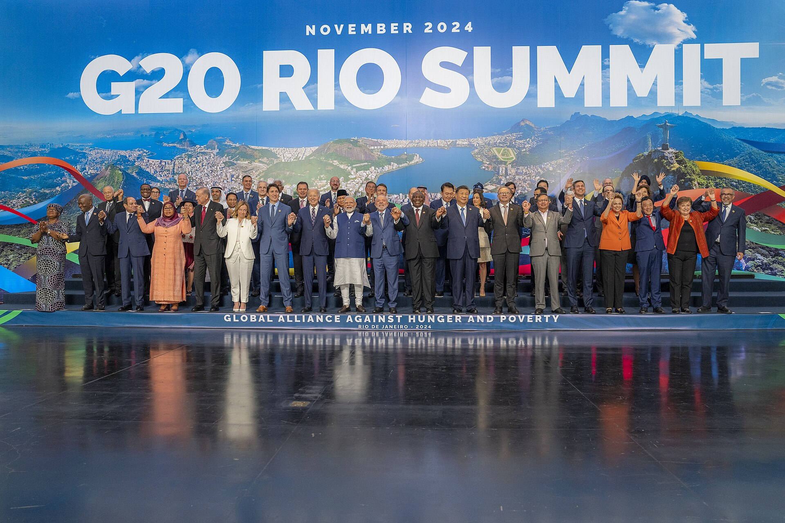
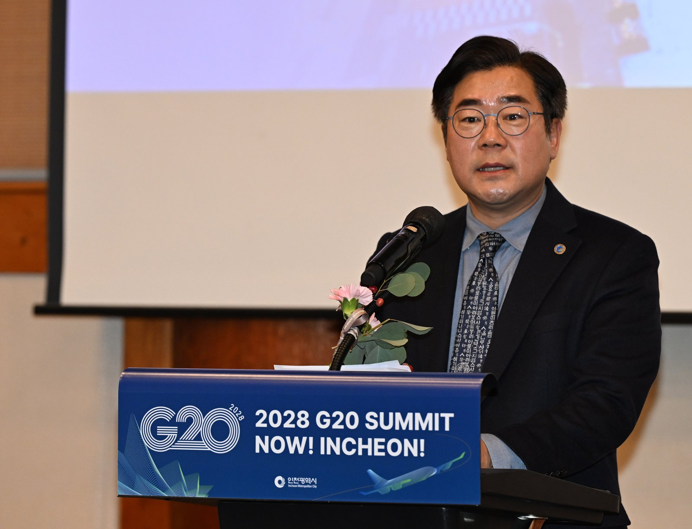
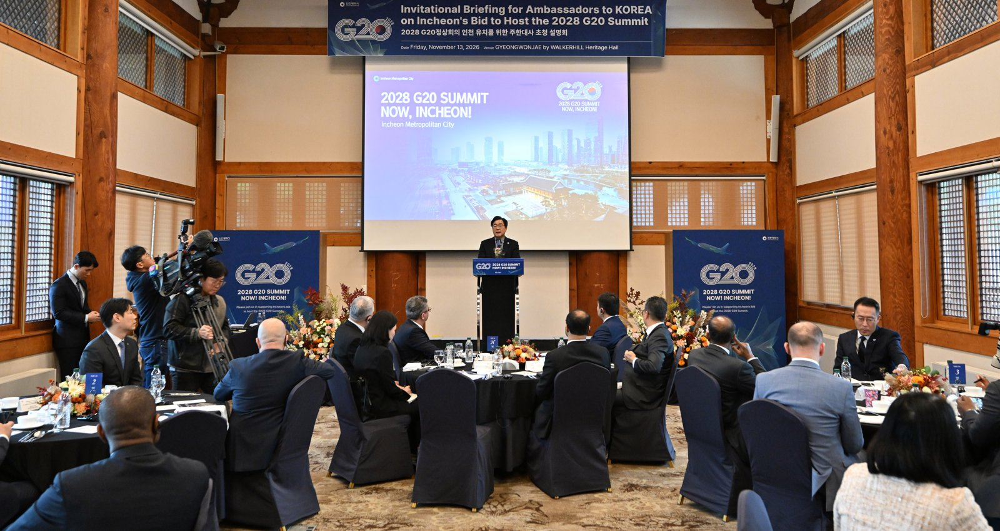

2028년 G20 정상회의, 인천·한국·동북아에 걸린 것
G20 출범 20주년, 한국 18년 만에 의장국
의장국은 의제를 고르고, 개최도시는 행사를 지원
인천시, 36개국 주한 외교사절에 유치 지지 요청
AI경제저널=김갑봉 기자 | 인천시(시장 박찬대)가 2028년 G20(주요 20개국) 정상회의 유치에 나섰다. 시는 13일 송도 경원재 바이 워커힐에서 '주한대사 초청 인천 시정설명회'를 열었다고 밝혔다. 36개국 주한 외교사절에게 유치 지지를 요청한 자리다.
2028년은 G20 정상회의가 출범한 지 20년이 되는 해다. 한국은 이해 G20 의장국을 맡는다. 2010년 서울 정상회의 이후 18년 만이다(AI경제저널 계산).


출범 20주년에 맡는 두 번째 의장국
G20 정상회의는 2008년 11월 미국 워싱턴에서 처음 열렸다. 미국은 국제경제에서 신흥국 비중이 커진 점을 감안해 신흥국을 포함한 G20 정상회의를 열기로 2008년 10월 발표했다.
외교부 기록을 보면 당시 미국은 G7과 한국, 호주 등과 참석국 범위를 협의했다.
2025년 11월 남아프리카공화국 요하네스버그 정상선언문은 의장국 차례를 적었다. 2026년 미국, 2027년 영국, 2028년 대한민국이다. 대통령실은 출범 20주년인 2028년 의장국으로서 G20 협력 강화에 선도적 역할을 할 것으로 기대한다고 밝혔다.
최근 G20 회의에서는 회원국이 빠지는 일이 이어졌다. 외교부 자료를 보면 미국은 요하네스버그 정상회의에 불참했다. 선언문은 「남아공 요하네스버그에 모인 G20 회원국 정상」을 주체로 한정해 채택됐다. 올해 의장국 미국이 지난 10월 연 셰르파회의에는 남아공이 빠졌다.
의장국이 얻는 것, 2010년 서울의 기록
의장국은 의제를 정한다. 대외경제정책연구원(KIEP) 윤덕룡 선임연구위원과 오승환 전문연구원은 2010년 11월 「서울 G20 정상회의 결과와 향후 과제」를 냈다.
연구진은 의장국이 "회의에서 논의할 이슈 결정 및 논의과정의 선택에 주도적인 역할"을 한다고 분석했다.
보고서는 한국이 신흥국으로는 처음 G20 의장국이 됐다고 적었다. 한국이 얻은 것으로는 위상 제고와 국제 네트워크 구축, 규칙 제정, 국제적 영향력 확대를 들었다.
보고서는 외환시장 안정을 위한 글로벌 금융안전망 도입과 핫머니 규제의 정당성을 국제규범으로 만든 것도 실질적인 이득으로 꼽았다.
외교부는 서울 정상회의 성과로 '서울 개발 컨센서스' 합의를 들었다. 정상들이 비즈니스 서밋 개최를 환영하고 지속 개최를 기대해, 한국의 이니셔티브가 이후 정상회의에서도 이어질 계기를 마련했다고 정리했다.
같은 보고서는 경고도 남겼다. 의장국 역할이 넘어가고 준비위원회가 해체되면 한국의 영향력이 "급격히 감소할 우려가 있음"이라고 적었다. 보고서는 G20 안에서 지적 리더십을 유지할 전문 조직을 두자고 제안했다.
동북아, 서울·항저우·오사카 다음
동북아에서 G20 정상회의는 세 번 열렸다. 2010년 서울, 2016년 중국 항저우, 2019년 일본 오사카다. 2028년 한국 회의는 동북아에서 9년 만이다(AI경제저널 계산).
KIEP 보고서는 G20 안 아시아 회원국이 6개라고 적었다. 그런데도 공동행동을 위한 제도적 협력이 없다고 진단했다.
보고서는 이미 정상회의가 있는 한·중·일이 3국 관련자회의(Caucus)를 열면 영향력을 넓히고 지역 협력도 키울 수 있다고 제안했다.
인천이 내건 까닭
박찬대 시장은 13일 "인천은 G20 정상회의 개최에 필요한 '의제·입지·실력'을 모두 갖춘 도시"라고 말했다. 의제로는 송도의 녹색기후기금(GCF) 사무국과 바이오기업, 인천공항·인천항의 인공지능(AI) 물류 혁신을 들었다.
입지로는 인천공항에서 송도까지 25분 거리를 꼽았다. 실력으로는 2010년 G20 셰르파회의와 아시안게임 개최 경험을 들었다. 박 시장은 국내에서는 서해안권 이웃 지역과 함께 회의를 열겠다고 밝혔다.
박 시장은 "2008년 세계 금융위기 당시 한 나라의 힘으로 해결할 수 없는 문제를 함께 풀기 위해 출발한 G20의 협력 정신을 인천에서 이어 가겠다"고 말했다.

시는 지난 9일 맹성규 국회의원(국회 외교통일위원회)을 위원장으로 하는 유치위원회를 출범시켰다. 시는 그날 "대한민국과 세계를 잇는 글로벌 관문 도시의 위상을 걸고" 유치에 나선다고 밝혔다. 지난 10월 7일에는 16개국 주한대사에게 유치 당위성을 설명했다.
G20 유치가 인천 시민에게 말하는 것
개최도시가 맡는 몫은 2010년 서울 사례에 나온다. 서울시정개발연구원(현 서울연구원) 변미리 등 연구진이 그해 2월 낸 보고서다.
연구진은 "행사 주체는 대한민국이며, 서울시는 관련 행사를 지원하는 제한된 역할을 할 것"이라고 적었다.
그러면서도 보고서는 G20 정상회의를 도시브랜드를 높일 "절호의 기회"로 봤다. 보고서는 2009년 정상회의를 연 미국 피츠버그 사례를 들었다. 피츠버그는 3500만달러의 직접 경제효과와 1억달러 이상의 광고 효과를 얻었다. 쇠락하는 산업도시 이미지도 바꿨다고 보고서는 적었다.
비용도 있다. 보고서는 부산발전연구원(2006) 분석을 인용해 2005년 부산 APEC 정상회의 사례도 정리했다. 사업비 1587억원 가운데 시비가 948억원으로 국비 631억원보다 많았다.
인천시는 이번 발표에서 개최도시를 언제, 어떤 절차로 정하는지 밝히지 않았다. 시가 부담할 예산 규모도 내놓지 않았다. 시는 중앙정부와 국제기구를 대상으로 유치 활동을 펴 최종 개최도시 지정을 이끌어낼 방침이다.
참고문헌
- "서울 G20 정상회의 결과와 향후 과제", 윤덕룡·오승환, 대외경제정책연구원 「KIEP 오늘의 세계경제」 Vol.10 No.32, 2010.11.23, https://www.kiep.go.kr/galleryDownload.es?bid=0003&list_no=3158&seq=1
- "G20 정상회의 개최에 따른 서울의 도시가치 제고 방안 연구", 변미리·반정화·이경미, 서울시정개발연구원, 2010.02.28, https://www.si.re.kr/node/24498
- "주요20개국(G20) 정상회의 개요", 외교부 다자경제기구과, https://www.mofa.go.kr/www/wpge/m_3952/contents.do
- "G20 정상회의 참석 관련 오현주 국가안보실 제3차장 브리핑", 대통령실, 2025.11.23, https://www.korea.kr/briefing/presidentView.do?newsId=148955147
- "G20 셰르파, 2026년 제3차 G20 셰르파회의(10.1-2, 워싱턴 D.C.) 참석", 외교부 국제경제국, 2026.10.03, https://www.mofa.go.kr/www/brd/m_4080/view.do?seq=377627
- "인천시, 2028 G20 정상회의 유치 총력… 36개국 주한 외교사절에 지지 요청", 인천광역시 국제협력과, 2026.11.13, https://www.incheon.go.kr/IC010205/view?repSeq=DOM_0000000015963189
- "대한민국 관문 인천, 2028 G20 정상회의 유치위 출범… "세계와 잇다"", 인천광역시 마이스산업과, 2026.11.09, https://www.incheon.go.kr/IC010205/view?repSeq=DOM_0000000015934333
- "인천시, 16개국 주한대사 대상 G20 정상회의 인천 유치 외교전 펼쳐", 인천광역시 마이스산업과, 2026.10.12, https://www.incheon.go.kr/IC010205/view?repSeq=DOM_0000000015732345
[사진 출처]
- [사진1] 백악관(The White House) 공식 사진, 애덤 슐츠 촬영, 위키미디어 공용 「P20241119AS-1224」(퍼블릭 도메인, 2024.11.19) https://commons.wikimedia.org/wiki/File:P20241119AS-1224_(54152247504).jpg
- [사진2·3] 인천시 인천인터넷방송 포토시정 「2028 G20정상회의 인천 유치를 위한 주한대사 초청 설명회」(2026.11.13) https://www.incheon.go.kr/intv/TV010201/3094721
관련기사
- 인천 택시 4606대, 2028 G20 정상회의 유치 홍보 나선다
- 백령공항 타당성재조사 통과, 총사업비 3913억원에 2033년 개항 전망
- 청라연장선 지연 대책 중간 결과, 전동차 임차와 버스 증차
- 청라연장선 시공사 경영진 간담회, 발표에 없는 새 개통 시점
저작권자 © AI경제저널 무단전재 및 재배포, AI학습 및 활용 금지